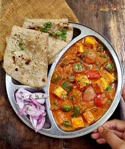

Chapathi and Curry
Calories: 350 kcal
Health Benefits: Rich in healthy fats, high in fiber, great source of protein and vitamins.

Ingredients:
- 2 cups whole wheat flour (atta) 1/2 tsp salt 1 tbsp oil or ghee (optional) Water (about 3/4 cup, adjust as needed) Ghee or butter (for brushing, optional)
- 2 tbsp oil or ghee 1 onion, finely chopped 1 tbsp ginger-garlic paste 1-2 green chilies, slit (optional) 1 large tomato, chopped
- 1 cup mixed vegetables (carrot, peas, beans, potato, etc.) 1/2 tsp turmeric powder 1 tsp red chili powder
- 1 tsp coriander powder 1 tsp garam masala 1/2 tsp cumin seeds 1/2 cup water (or vegetable stock) Salt to taste Fresh cilantro (coriander) leaves, chopped, for garnish
Instructions:
- In a large bowl, combine whole wheat flour and salt. You can also add oil or ghee to make the chapathi soft. Gradually add water, a little at a time, and mix to form a dough. Knead for about 5-7 minutes until the dough is soft and smooth. If the dough is sticky, add a little more flour. Cover the dough with a damp cloth and let it rest for at least 15-20 minutes. Roll the chapathi: After resting, divide the dough into small balls (about the size of a golf ball). Roll each ball between your palms to form smooth balls. Roll each ball into a thin circle (about 6-7 inches in diameter) using a rolling pin and some dry flour to prevent sticking. Cook the chapathi: Heat a tawa or flat pan over medium-high heat. Once hot, place the rolled chapathi on the tawa. Cook for about 30 seconds or until small bubbles form on the surface. Flip it over and cook for another 30 seconds. Once you see bubbles, press gently with a cloth or spatula, and the chapathi will puff up. Flip it again and cook for a few more seconds on the other side. Optionally, brush with ghee or butter once cooked. Serve: Keep the chapathi warm by wrapping them in a clean kitchen towel or placing them in an insulated container. Serve with curry.
- Cook the base: Heat oil or ghee in a large pan over medium heat. Add cumin seeds and let them splutter. Then add chopped onions and sauté until golden brown. Add the ginger-garlic paste and green chilies, and sauté for another minute until fragrant. Add chopped tomatoes, turmeric powder, red chili powder, coriander powder, and salt. Cook until the tomatoes soften and the oil begins to separate from the masala (spice mix).
- Add the mixed vegetables (you can use frozen veggies for convenience). Stir well to coat the vegetables in the spices. Cover and cook for 5-7 minutes on low heat, allowing the vegetables to soften and cook.
- Add water and cook: Add water or vegetable stock to the pan, stir, and bring to a boil. Lower the heat and simmer the curry for 10-15 minutes, or until the vegetables are fully cooked and the flavors are blended. You can adjust the consistency by adding more water if needed.
- Add water and cook: Add water or vegetable stock to the pan, stir, and bring to a boil. Lower the heat and simmer the curry for 10-15 minutes, or until the vegetables are fully cooked and the flavors are blended. You can adjust the consistency by adding more water if needed.